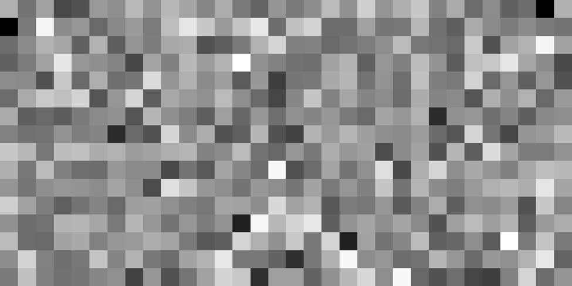

Representation
ML with R
The
R Bootcamp @ ARC


Overview
By the end of this practical you will know how to:
- Extract embeddings from weights.
- Extract and visualize similarities between embeddings.
Tasks
A - Setup
Open your
TheRBootcampR project.Open a new R script. Save it as a new file called
representation_practical.Rin the2_Codefolder.Using
library()load the the packagestidyverseandkeras
# install.packages("tidyverse")
# install.packages("keras")
# Load packages necessary for this exercise
library(tidyverse)
library(keras)- Now
source()thehelper_2.Rfile in your2_Codefolder.
# Load helper.R
source("2_Code/helper_2.R")Part 1: Fashion
B - Fit network
- Run the code below to load the
fashion.RDSdataset as a new object.
# MNIST fashion data
fashion <- readRDS(file = "1_Data/fashion.RDS")- Remind yourself of the contents of the
fashionobject usingstr().
# Inspect contents
str(digit)- Use the code below to run a two-hidden layer neural network predicting the fashion item.
# PREPARATIONS -------
# fashion items
fashion_labels <- c('T-shirt/top','Trouser','Pullover','Dress','Coat',
'Sandal','Shirt','Sneaker','Bag','Ankle boot')
# split digit train
c(fashion_train_images, fashion_train_items) %<-% fashion$train
# split digit test
c(fashion_test_images, fashion_test_items) %<-% fashion$test
# reshape images
fashion_train_images_serialized <- array_reshape(fashion_train_images, c(nrow(fashion_train_images), 784))
fashion_test_images_serialized <- array_reshape(fashion_test_images, c(nrow(fashion_test_images), 784))
# rescale images
fashion_train_images_serialized <- fashion_train_images_serialized / 255
fashion_test_images_serialized <- fashion_test_images_serialized / 255
# expand criterion
fashion_train_items_onehot <- to_categorical(fashion_train_items, 10)
fashion_test_items_onehot <- to_categorical(fashion_test_items, 10)
# MODELING -------
# initialize deepnet
net <- keras_model_sequential()
# add layer
net %>%
layer_dense(input_shape = 784, units = 256, activation = "relu") %>%
layer_dense(units = 144, activation = "relu") %>%
layer_dense(units = 10, activation = "softmax")
# model information
summary(net)
# loss, optimizers, & metrics
net %>% compile(
optimizer = 'adam',
loss = 'categorical_crossentropy',
metrics = c('accuracy')
)
# fit network
net %>% fit(
x = fashion_train_images_serialized,
y = fashion_train_items_onehot,
epochs = 10
)C - Fashion embeddings
- Use the code below to extract the estimated weights and biases of the network.
# extract weights
weights <- get_weights(net)- Using
str()inspect the structure of theweightsobject. Do the contents line up with your expectations?
# inspect weights
str(weights)There are six elements. Three containing the weights (elements 1, 3, 5) and three containing the biases (elements 2, 4, 6).
Use the first elements in
weightsto calculate the activation patterns, aka the embeddings, at the first layers for the first1,000fashion items, ignoring the bias and the activation function. You’ll see, this can be easily done using matrix multiplication%*%.
# inspect weights
embedding <- fashion_train_images_serialized[1:1000, ] %*% weights[[1]]Assess the dimensionality of
embeddingusingdim(). Correct numbers of rows and columns?Use the
plot_embedding()function, which you loaded earlier when you sourced thehelper_2.Rfile, to visualize the activations. Rows in the plot will be the1,000fashion items and columns the256nodes of the embedding at the first hidden layer. Looks a bit messy right?
# plot activation
plot_embedding(embedding)- To bring some order into matters extract the first
1000fashion items fromfashion_train_itemsand then use those to order the rows inembedding.
# extract fashon items
items <- fashion_train_items[1:1000]
# order activations
embedding <- embedding[order(items), ]- Now use again
plot_embedding()to plot the embedding. Things should look a lot clearer. The bands correspond to the different items, with the0-item ("T-shirt/top") at the bottom and the9-item ("Angle boot") at the top.
D - Fashion similarities
- Use the
cosine()function from thehelper_2.Rfile to determine the similarities between the fashion item vectors in the embedding. Cosine determines the angle between the locations of two fashion items in the256dimensional space that is the embedding. Cosine is algebraically close to the standard correlation coefficient.
# calculate cosine similarities
fashion_cosines <- cosine(embedding)- Now use the
plot_cosinefunction (also from thehelper_2.Rfile) to plot the matrix of cosine values. The categories0to9go from top to bottom and from left to right. Light grey values indicate high cosine similarity, darker ones low cosine similarity. Try to make sense of the plot.
# Plot cosine similarities
plot_cosine(fashion_cosines)- The cosine similarity plot shows several interesting patterns.
First, items of one item type, as should be, are consistently more
similar to themselves than to other item type. This can be gleaned from
fact that the rectangles in the diagonal are always lightest in their
respective columns. Second, some items types are closer to each other
than others are. This can be gleaned from the fact that there are other
light rectangle off the diagonal. Use the code below to visualize this
information in a more intuitive way using multi-dimensional scaling.
Yes, there is a function ready,
plot_cosine_mds(). Try to make sense of the plot.
# calculate cosine similarities
plot_cosine_mds(fashion_cosines, fashion_labels[items[order(items)]+1])E - Understanding prediction errors
- The cosine mds plot confirmed both the overall good separation of fashion items, but also that some item types are more similar to each other than others. Importantly, these patterns should translate into the errors that the model makes. Use the code below to determine the confusion matrix for the predictions of the test set. Do the confusions in prediction line up with the overlap of fashion items in the cosine mds?
# prediction confusion matrix
pred = net %>% predict(fashion_test_images_serialized) %>% k_argmax() %>% as.numeric()
table(fashion_labels[fashion_test_items+1], fashion_labels[pred+1])- Yes, they do. The biggest prediction errors occur for the types
Coat,Pullover, andShirt, which in the cosine mds pretty much sit on top of each other.
F - Optional: Deeper layers
- Carry out the same analyses as above, however, using the embedding at the second layer, which are little more complicated to determine, as the first layer’s biases and the activation function need to be taken into account.
# second layer embedding
relu = function(z) {z[z < 0] = 0; z}
z_1 <- cbind(img_train[1:1000,],1) %*% rbind(weights[[1]], weights[[2]])
a_1 <- t(apply(z_1, 1, relu))
embedding <- a_1 %*% weights[[3]]Part 2: Words
G - Word embeddings
- Run the code below to load the
capital.RDSdataset as a new object.
# load embeddings
capital <- readRDS(file = "1_Data/capital.RDS")- The dataset contains a pre-learned embedding on the basis of all of
Wikipedia and a large website corpus. Use
rownames()inspect to words for which embeddings are present.
# rownames of capital
rownames(capital)- The dataset contains embeddings for a bunch of capitals and the
respective countries. Use
plot_embedding()to plot the capital embeddings.
# plot capital embedding
plot_embedding(capital)- Not much to see. Maybe a little bit of banding for the pairs of words belonging to one country, but certainly not much. Calculate the cosine similarities and plot them.
# plot capital
capital_cosine = cosine(capital)
plot_cosine(capital_cosine)- The cosine plot makes clear that corresponding capitals and countries are clearly more related to each other than non-corresponding capitals and countries. However, as before, there are also some high cosines off-diagonal. Bring more light into the matter by creating another cosine mds plot.
# plot capital
capital_cosine = cosine(capital)
plot_cosine_mds(capital_cosine, rownames(capital_cosine), col = F)- The cosine mds plot shows several interesting patterns. First, countries and capitals are clearly separated, suggesting that countries among themselves and capitals among themselves are more strongly related than between them. Second, countries and capitals seem to be the mirror image of each other, suggesting that there the embedding has “understood” the link between them. Third, countries and capitals are clearly arranged according to geography, suggesting that the embedding has also “understood” the layout of the world.
Resources
Cheatsheet
from github.com/rstudio